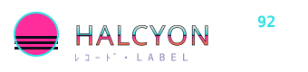

雛菊頻道
ﾃﾞｲｼﾞｰ
本名林曉琪，2018 年帶著一台壞掉的 4 軌卡座來敲門。專做便利商店與地下街的環境取樣。
「安靜不是沒有聲音，是聲音都很遠。」
HAL-021 / HAL-013 / HAL-006
ｱｰﾃｨｽﾄ
九位睡不著的人。以下人物、經歷與作品皆為虛構示意。
ﾃﾞｲｼﾞｰ
本名林曉琪，2018 年帶著一台壞掉的 4 軌卡座來敲門。專做便利商店與地下街的環境取樣。
「安靜不是沒有聲音，是聲音都很遠。」
HAL-021 / HAL-013 / HAL-006
ｽﾄﾗﾄｽ
雙人組，陳彥廷與 DJ 阿樹。把老式電梯音樂放慢兩倍，加上熱帶合成器。
「往上，但不知道幾樓。」
HAL-020 / HAL-011
ｲｼﾀﾞ
神祕的日本客座製作人，只透過電子郵件溝通。專輯全以自動販賣機為主題。
「投幣，等待，收下。」
HAL-018 / HAL-009
ﾅｲﾄﾊﾞｽ
吉他手出身的王柏森，一個人扛著效果器踏板做慢調 dream pop。
「末班車最好，沒人跟你搶位子。」
HAL-019 / HAL-015
ﾌﾟｰﾙ
三人組，主打氯水味的合成器與泳池廣播回音。夏天限定發行。
「水面下什麼都聽得見。」
HAL-016 / HAL-007
ｻﾝｶｸ
製作人蘇怡靜，愛用老式鼓機與家電的嗡嗡聲。作品常在轉角戛然而止。
「轉角過去就是另一首。」
HAL-014 / HAL-005
我們每年只簽 1–2 組。把你的 demo（卡帶或連結皆可）寄到 demo@halcyon92.tw（虛構），主旨寫上你昨晚幾點睡。不接受修得太乾淨的東西——留一點嘶聲給我們。

▸ 簽約音樂人 9 組